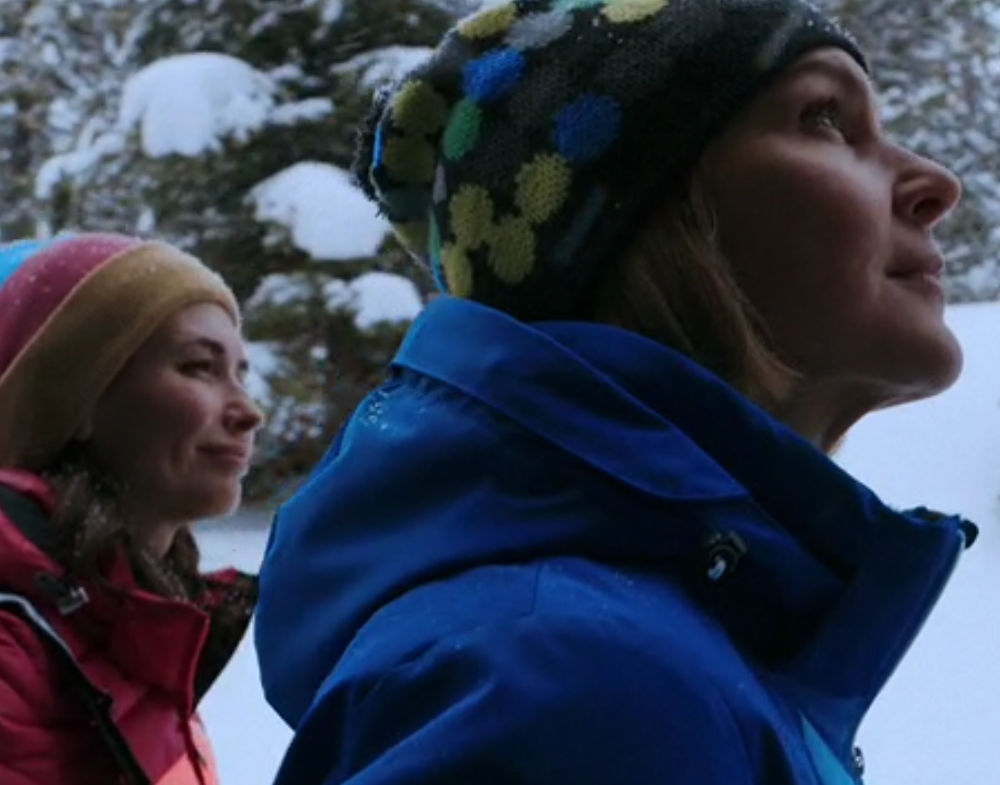

Pluribus
Pluribus · Season 1 · 2025

Vince Gilligan says he's in no hurry to get going on Season 2 of PLURIBUS. Understood, but hey, Vince, if you're listening: I'm not getting any younger.
— Stephen King (@StephenKing) December 26, 2025
Just like the great Stephen King, I can’t wait for Season 2 of this series. Being a huge fan of the Breaking Bad universe, during the first episode I wasn’t sure whether I was going to like this series or not. I immediately activated my reflexes shaped by previous zombie apocalypses, where the zombies inevitably became violent. The series became truly interesting when they did not. This post relates to my previous post, Perchance to Dream. How would you react if every wish you have ever desired were fulfilled? What darkness could be lurking behind a life without conflict?
The first season leaves us with many questions. How did this happen? What is the end game of the weirdos? Why are the few who remained unaltered so special? Vince Gilligan once again writes a story in which details reveal large parts of the characters.
What I really enjoyed about this season were the questions about love. What if you had exactly the partner you imagined in your dreams? Could love flourish if it mirrors perfectly the person you envisioned? Zosia is the physical representation of Carol’s ideal as shaped by her Wycaro books. She embodies calmness when Carol erupts emotionally and behaves recklessly, like removing the pin of a hand grenade. Zosia also expresses interest in Carol’s books. She does not need to install a breathalyzer in the car or a sensor in the liquor cabinet, as Carol’s previous partner, Helen, did.
Can romantic relationships be fulfilled through idealization? Clearly, this path leaves people fragile, and it can become destructive once conflict arrives. Is love acceptance? I believe it is not, at least not entirely. Zosia accepts Carol with her virtues and flaws, but she expects submission in return in order to transform her into one of the weirdos. In fact, it is difficult to even speak of Zosia as a fully independent character, since she functions as an extension of the will of the collective Pluribus Unum that has conquered Earth. I would say love is a two-way road of acceptance, limited by boundaries. Love bombing and pleasing the other one without connection is not love; it is manipulation.
I am elated to be back in Albuquerque, New Mexico, through this series. It provides plenty of food for thought for the years to come. I have once again caught the Vince Gilligan fever with this new project, and I genuinely love this series.